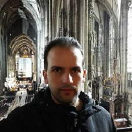

Arturo Rivera Palmeros
I am a Computer Engineer with over five years of experience in systems and web development. Throughout my career, I have worked with companies such as SI-TI and Schaefer Systems International, where I was involved in implementing technological solutions for high-profile clients including Volkswagen, Gamesa, Mary Kay, and Ilusión, among others.
In addition to my background in automation, I have also worked as a support engineer specializing in database systems, ensuring the efficient operation and continuity of critical platforms. I have contributed to the academic field as well, serving as a lecturer at the Faculty of Computer Science at University BUAP (Benemerita Universidad Autonoma de Puebla), where I shared my knowledge and experience with future engineers.
I also had the opportunity to lead innovative technology initiatives as Head of Special Projects at the Supercomputing Laboratory of Southeastern Mexico.
Currently, I work as a freelance developer, collaborating with various clients to design and implement tailored software solutions, which allows me to continue honing my programming and project management skills.
I am a committed professional, passionate about technological development and continuous improvement, always focused on finding practical and efficient solutions to complex engineering challenges.